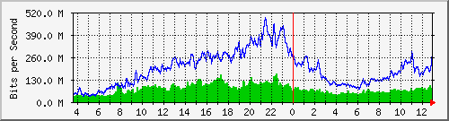

Traffic Analysis for Gi1/0/11 -- spider.sky
| System: | spider.sky in stoyka |
| Maintainer: | falcon@skyinet.org |
| Description: | GigabitEthernet1/0/11 3825cisco |
| ifType: | ethernetCsmacd (6) |
| ifName: | Gi1/0/11 |
| Max Speed: | 1000.0 Mbits/s |
| Ip: | No Ip (No DNS name) |
The statistics were last updated Thursday, 26 October 2017 at 12:55,
at which time 'spider.sky' had been up for 8 days, 10:32:41.
`Daily' Graph (5 Minute Average)

|
Max |
Average |
Current |
| In |
162.7 Mb/s (16.3%) |
74.5 Mb/s (7.5%) |
53.5 Mb/s (5.4%) |
| Out |
483.7 Mb/s (48.4%) |
190.9 Mb/s (19.1%) |
288.3 Mb/s (28.8%) |
`Weekly' Graph (30 Minute Average)
|
Max |
Average |
Current |
| In |
163.5 Mb/s (16.3%) |
84.4 Mb/s (8.4%) |
70.4 Mb/s (7.0%) |
| Out |
464.0 Mb/s (46.4%) |
200.4 Mb/s (20.0%) |
187.2 Mb/s (18.7%) |
`Monthly' Graph (2 Hour Average)
|
Max |
Average |
Current |
| In |
186.6 Mb/s (18.7%) |
86.7 Mb/s (8.7%) |
67.0 Mb/s (6.7%) |
| Out |
412.8 Mb/s (41.3%) |
197.1 Mb/s (19.7%) |
197.6 Mb/s (19.8%) |
`Yearly' Graph (1 Day Average)
|
Max |
Average |
Current |
| In |
168.1 Mb/s (16.8%) |
75.4 Mb/s (7.5%) |
79.8 Mb/s (8.0%) |
| Out |
245.4 Mb/s (24.5%) |
162.2 Mb/s (16.2%) |
207.2 Mb/s (20.7%) |
| GREEN ### |
Incoming Traffic in Bits per Second |
| BLUE ### |
Outgoing Traffic in Bits per Second |